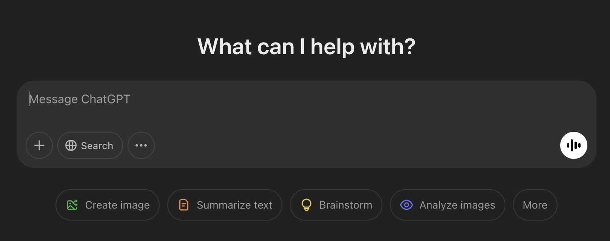
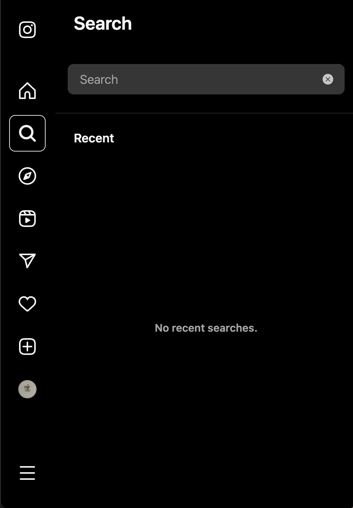
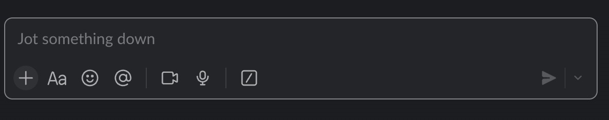
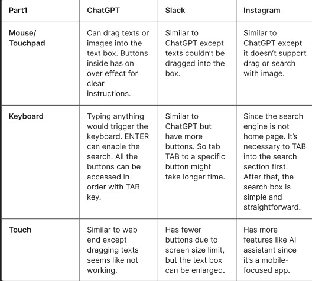
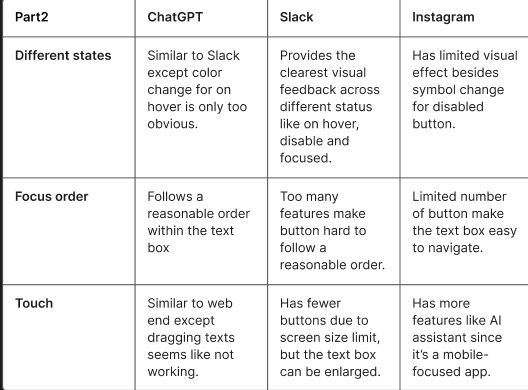
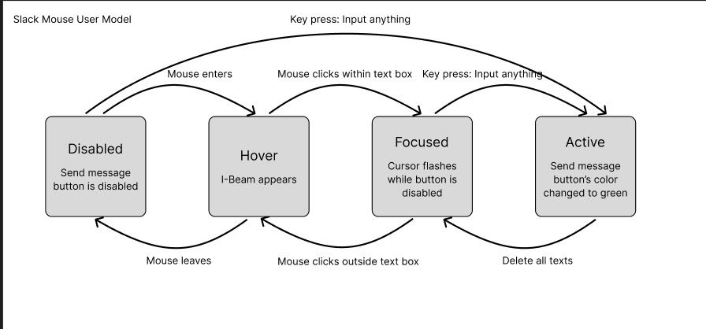
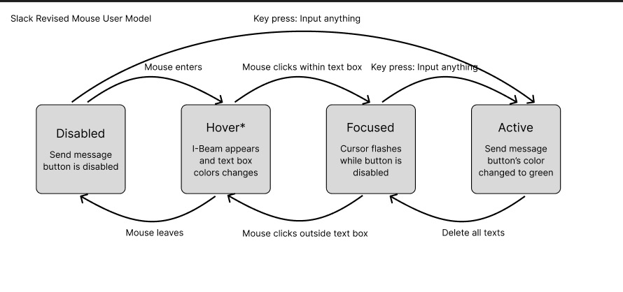
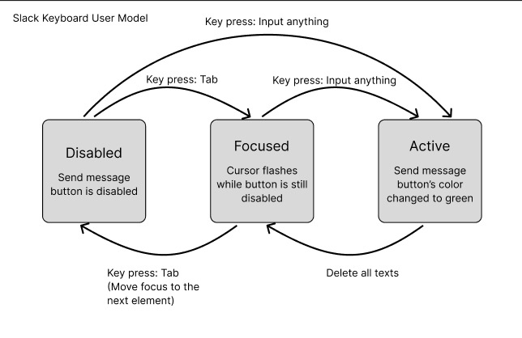
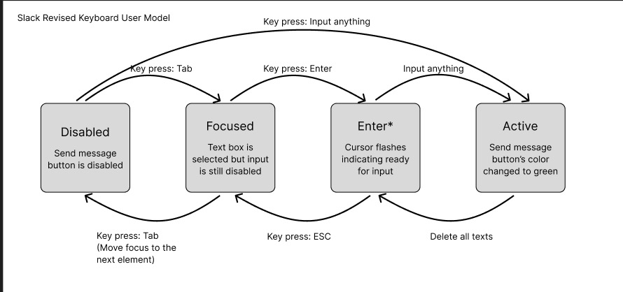

ChatGPT Text Box
Instagram Text Box
Slack Text Box
ChatGPT provides flexible input options and logical navigation, while Slack offers clear visual feedback but may overwhelm with too many buttons. Instagram, optimized for mobile, lacks strong visual indicators and structured keyboard navigation.
Text Box Input
Text Box Output
Different platforms prioritize accessibility and usability in unique ways. Besides, chatGPT and Slack focus more on web-end features while instragram designs better mobile UI.
Mouse State Model Before
Mouse State Model After
Revision & Trade-off:
The original on hover state didn’t have clear visual changes and miss a separate screen reader to locate the text box for users with vision disability. New design added clear color changes and screen reader explanations, potentially makes sacrifice in subtlety and aesthetics, for better accessibility.
Keyboard State Model Before
Keyboard State Model After
Revision & Trade-off:
The prior design can direct activate text box through any keyboard input, prone to accidental typing. New design added an explicit "Enter" key confirmation to activate input. But this edit did sacrifice some efficiency and learnability.
Move your mouse over an element to check if it’s interactive.
When an element is ready for input. You can usually move focus using the Tab key or simply click on it.
Adds an explicit Enter key confirmation to activate input, prevent accidential typing.
When you click or press down on an element, showing it’s being interacted with.
Mouse Users:
Keyboard Users:
Example 1 (Accessibility) - ChatGPT's Keyboard Accessibility:
Example 2 (Inaccessibility) - Instagram's Search Box: